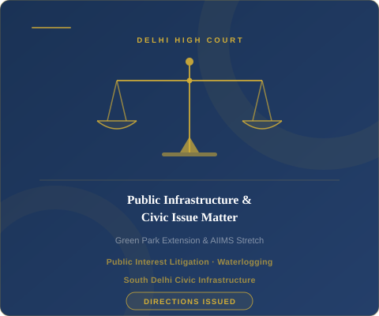

Advocate Shailendra Bhatnagar of SB & Associates appeared as Petitioner-in-person before the Delhi High Court, successfully addressing long-standing civic issues affecting residents of South Delhi.
The matter concerned persistent waterlogging and sewage overflow in Green Park Extension and surrounding areas, causing serious public health hazards and significantly impacting the daily lives of residents. The issue had remained unresolved for years despite repeated representations to the concerned authorities.
The matter was brought before the Court by Advocate Shailendra Bhatnagar as Petitioner-in-person, directly placing the failures of civic infrastructure on the judicial record.
Public interest and civic health concerns must prevail over administrative delays. Courts will not permit authorities to indefinitely defer action on matters that directly affect the health, safety, and quality of life of citizens, and will issue binding directions to enforce constitutional rights including the right to a clean environment.

Delhi High Court — writ jurisdiction under Article 226 of the Constitution of India.
Writ petition concerning failure of civic authorities to address chronic waterlogging and sewage infrastructure in South Delhi.
Civil Litigation, Constitutional Law, Public Interest & Writ Proceedings.
Court issued directions to concerned authorities for timely and accountable remedial action.
Whether authorities can delay essential civic infrastructure work despite clear public necessity
The Delhi High Court emphasised:
Press coverage of the matter
Forgotten for 15 years: drain which led to waterlogging found in South Delhi.
Read Article →Delhi High Court directs Delhi Jal Board to proceed with new sewer lines to address AIIMS area waterlogging.
Read Article →This matter is illustrative in nature and does not disclose confidential client information. Past outcomes do not guarantee similar results in future matters.
We have experience in writ proceedings and public interest litigation before the Delhi High Court. Speak to our team today.